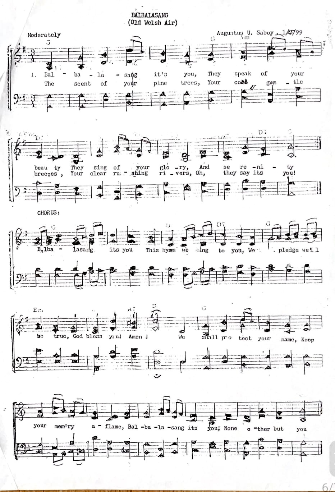
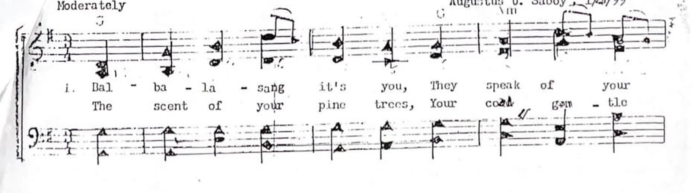
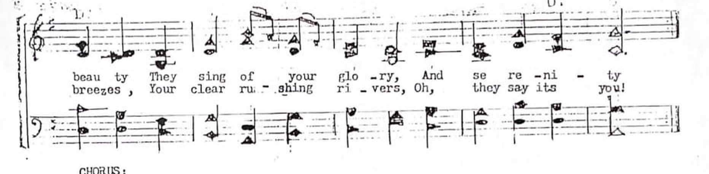
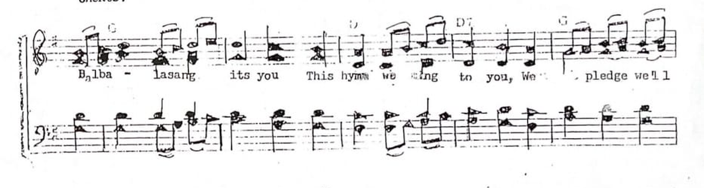
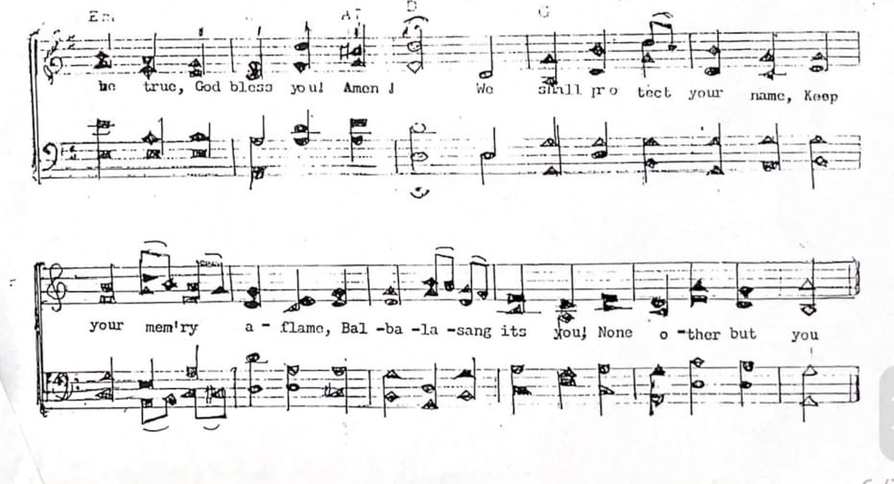

TUVYAN · Music & Archival Manuscripts
Balbalasang (Old Welsh Air)
Attributed on the source: Augustus U. Saboy. Tempo: Moderately. Source date: the inscription appears to end in “/99”; its full reading remains unverified.
Complete surviving score image

Read the score section by section
These enlarged sections help readers inspect the melody, accompaniment and lyrics without changing the original notation.
Opening verse
Enlarged view of the original notation; not a newly engraved score.

Continuation of verse
Enlarged view of the original notation; not a newly engraved score.

Chorus
Enlarged view of the original notation; not a newly engraved score.

Closing chorus and continuation
Enlarged view of the original notation; not a newly engraved score.

Selected legible words
Short phrases visible in the scan include “The scent of your pine trees,” “They sing of your glory,” “God bless you! Amen,” and “We shall protect your name.” This is not a complete lyric transcription; several syllables and phrases need a clearer source.
Readers who possess an earlier copy, a clearer score, or a recording may contact the TUVYAN archive to help verify the music.